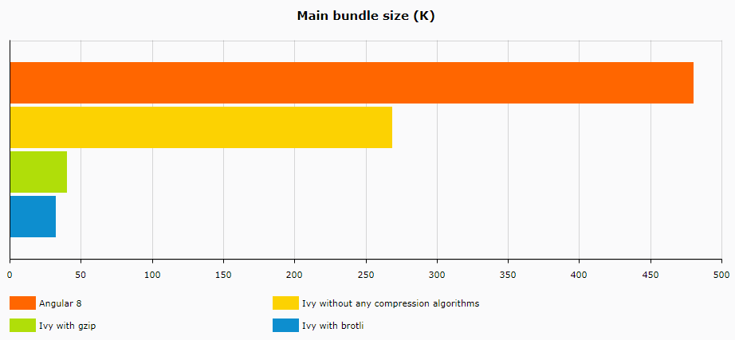
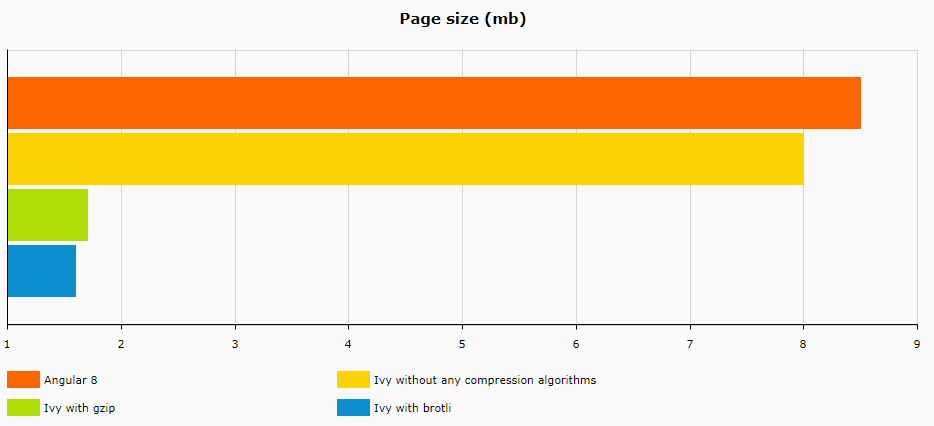
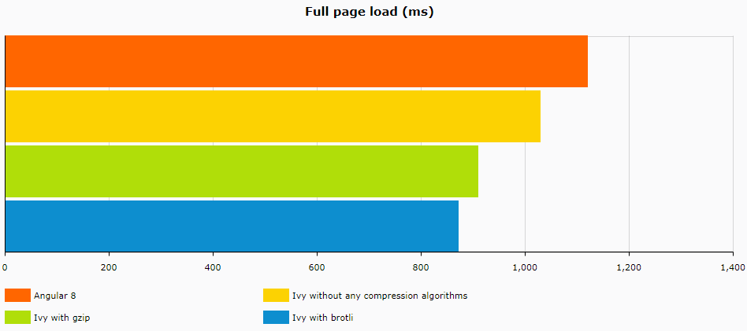
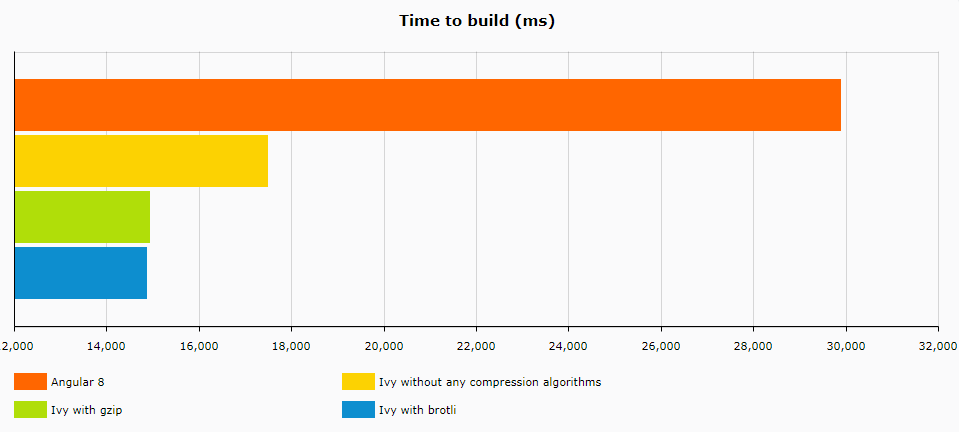

Angular Ivy performance comparison
After Angular announces their new Ivy compiler, with smaller bundle sizes, I wanted to find out on a real project how much the bundle size and the overall application performance were improved.
After seeing the Angular 9 release noted, I asked myself if the bundle size can be improved more, so I found out that is possible by using compressing algorithms. After a little research, there is a library called Express, which run through all .js, .html and .css files and compress them using gzip and brotli. I will create an article to show how this can be done.
But before showing the data, I want to present the project specifications. The project is a smaller one, with only 11 pages and it’s using Angular Material.
The test was run on a static page because I didn’t want to be affected by HTTP calls, and the browser used was Google Chrome. I tested the page size, the full load time of the page, time to build and the main bundle size. Another important thing that I want to mention is that the compressing algorithms were run through Angular 9 build files.
First, let’s take a look at the bundle size.

There is a huge difference between Angular 8 bundle size and Angular 9 with brotli, and we’ll also see that on page size comparison.

The page size matches my expectations, it’s normal to have smaller sizes on the compressed files rather than uncompressed ones.
But let’s keep this in mind for a while, and let’s take look at the full page load time diagram, where the overall performance of this application was not significantly improved, and I will explain why.

As the diagram shows, the difference between Angular 8 and Angular 9 with the compression algorithms is only a few milliseconds, exactly 249ms, which is relatively OK for an application of this size, but I expected a little bit more also considering the results in the other diagrams.
The explanation for this is due to the Tree Shaking process, where the unused libraries are deleted, based on the tested project setup that doesn’t have a lot of imports and Tree Shaking didn’t have unwanted libraries to delete caused a very close time between the 4 samples. But the main factor of this smaller gaps is because of the project size and after that the Tree Shaking process.
Smaller page size means faster download which will decrease the page loading time. I will expect on a large application the time to be much more improved.

From a developer point of view, this is nice, Angular Ivy builds faster, and that a nice advantage where the project is quite large. I want to mention that the times for the two compressing algorithm samples shouldn’t be here. In fact it’s the compressing time, it would have been unusual if the building and compressing time was smaller.
Let’s calculate the building time for this two compressing algorithms:
gzip:
Building time: 17481ms Compressing time: 14913ms Total: 32394ms
brotli:
Building time: 14913ms Compressing time: 14859ms Total: 29772ms
The building time for Angular 8 was 29889ms, which means Angular 9 with brotli obtained lower building times. I know that is not a huge difference between these two, but it will scale up on larger projects.
In conclusion, the performance of Angular 9 is there and can be noticed on larger projects, still is a nice improvement compared to the previous Angular versions.
Thanks for reading this article, if you find it interesting please share it with your colleagues and friends. Or if you find something that can be improved please let me know.